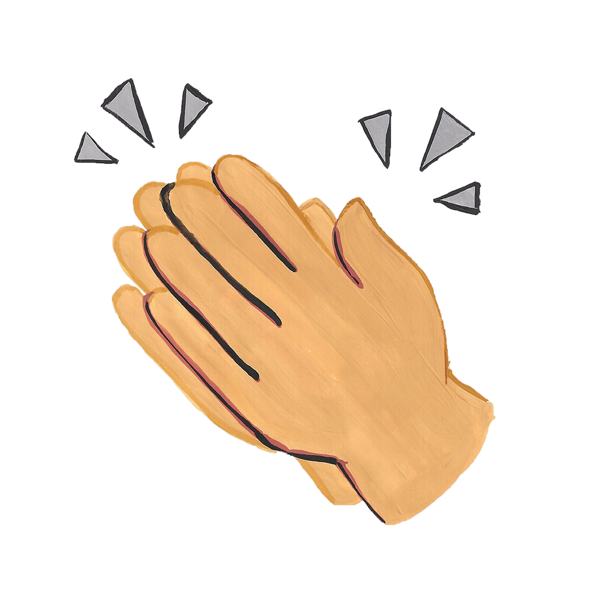

Find your #FakeFriend
An unsupportive friend group? In this economy?
Research shows that good friendships can impact your health and even the length of your life. This 2009 study found that “robust”
social and emotional relationships can protect your health. For instance, people who self-reported progress
with diseases like diabetes tended to report better physical feelings when they had good relationships with
family and friends. Almost one year into a global panoramic, this matters more than ever.
You’re already spending so much mental energy just trying to survive; you don’t have much left to put into
relationships that don’t empower you.
It can be tough to figure out when a friendship isn’t the best fit for you—especially when everything is
~online~. How can we tell if the parabola is draining us or if it’s the friendship’s
dynamics?
Take this quiz and add up your points to see if your friendship is mutually supportive, could be with some
work or is something you should get far away from (and stay far away from after the penne
pasta).

-5 to 7 points: This friendship might be cool but probably shouldn’t be your main source of support
It seems like you and your friend are misunderstanding each other and it’s having some significant impacts
on the friendship. Have you considered whether you two have anything in common?
This 2016 study shows that “friendship
chemistry” is a huge factor that impacts the success of friendships. Think carefully about whether you two
have any shared interests or experiences, and how any major differences could be impacting the way you treat
each other. For example, the same research paper shows that if friends don’t have a high degree of respect
for each other’s beliefs—cultural beliefs, moral beliefs, etc.—they tend to have a lower friendship
chemistry as a result. Part of being a good friend, then, is realizing that even if your friend disagrees
with you on some things, there should be a mutual respect there that allows each friend to make decisions
without judgement. If you constantly feel drained at the idea of explaining yourself or your decisions and
beliefs to your friend, or if you feel judged every time you try to go to them for advice, they might not be
the person you should lean on. Make a list of traits you would see in a good
friend and compare it to the way this person makes you feel.
While this person may be someone you care about, it probably isn’t the best idea to make them a part of your
core support system. If realizing this means you’re starting from scratch, the University at Buffalo created
a community resource about how to build a support network. The
article suggests focusing on meeting people with similar interests and experiences, either by
volunteering or through extracurricular activities. At Ryerson, there are 83
student groups under the Ryerson Students’ Union’s jurisdiction alone, encompassing anything from
the Ryerson Debate Association to the Improv Club to the Urban Hip Hop Union. You can also meet friends online, through apps
like Bumble BFF, and on social media platforms like Reddit or Facebook, many of which match you with people
who share your interests. There’s even a Ryerson-exclusive app for meeting new friends and students in your
classes called RU Mine.
8-16 points: This friendship has potential, but you both have to put in work
While this friendship seems good on the surface, there’s something here that isn’t fully clicking—and it’s
causing at least some of your support needs to be left unmet. Luckily, this is a problem that open
communication can help you work through. Someone who communicates effectively should be willing to
hear out different perspectives, actively listen without making you feel like you’re bothering them and
always respond to you respectfully, even when they’re hurt. When someone’s needs aren’t being met, it’s
helpful to have a conversation about what exactly each of you wants out of the friendship. If one of you
wants to video chat every night while the other needs a significant amount of time alone, it can be helpful
to lay out those expectations so that one of you isn’t feeling bombarded while the other is feeling ignored.
Don’t be afraid to seek out support from other people, as it can be pretty precarious to have one person be
your sole
support system. If you feel like this person, while well-meaning, doesn’t understand your goals, try
reaching out to people from your class or job who might have a better understanding of certain challenges
you face.
This friendship is a mutually-serving support circle (16 points and higher)
You seem to have this friendship down to a science, and when things go wrong, you’re likely able to
communicate effectively because you have a good understanding of each other’s needs. What you need to focus
on now is maintaining that support system. The University
at Buffalo’s School of Social Work community resource page suggests that an effective way to do this
is by keeping communication open and making the other person feel appreciated as much as you’re able to.
When you consider
the qualities that you like about this friendship, be sure they’re being embodied on both sides.
This can be done through things like celebrating their successes, showing interest in things they like and
continuing to communicate honestly and respectfully with each other. When upsets do happen, remember to
handle it as a team, not as two people fighting against each other.
On their end, keep looking out for their support. A good friend should be excited to hear when things are
going well for you but should also be there for you when they aren’t. This is of course within their
communicated limits; even when they aren’t able to listen to you rant on FaceTime for hours, it’s all about
the effort. Maybe they just send you a TikTok or meme to let you know they’re thinking about you. As long as
you can confidently say that the friendship is both give and take, you should look forward to the day you
get to hug this friend again; they seem great!